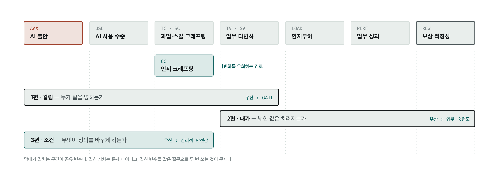
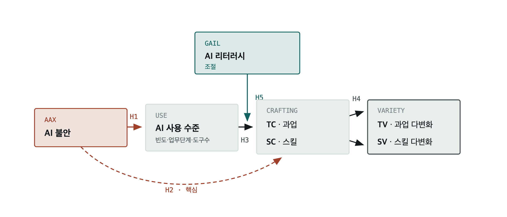
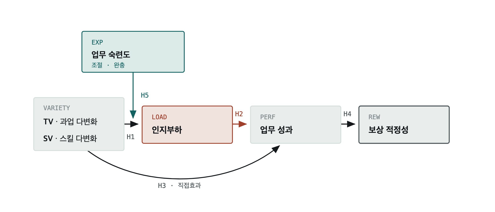
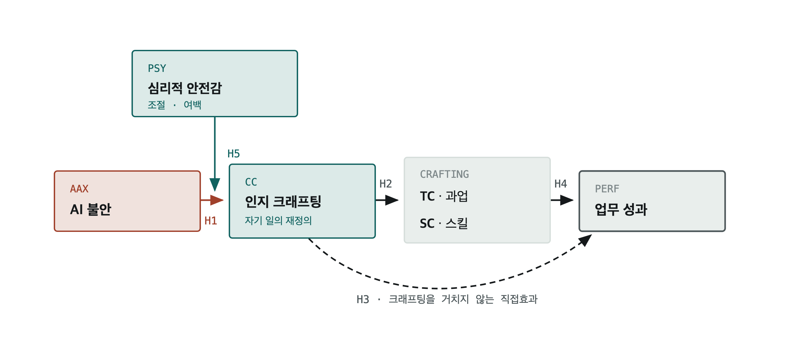

AI에 대한 불안은 사용을 늘릴 수 있지만, 실제 업무 변화까지 만들지는 않을 수 있다. AI 활용 역량과 안전하게 시도할 수 있는 환경이 함께 필요하다.
AI크래프팅_경로모형.html (같은 폴더)디자이너가 생성형 AI를 사용하는 일이 업무 내용과 기술의 변화, 성과와 보상으로 어떻게 이어지는지를 세 편의 논문으로 나누어 살펴본다.
생성형 AI가 디자이너의 일에 들어왔을 때, 누가 자신의 업무 범위를 넓히며 그 변화가 성과와 보상으로 이어지는가? 또 무엇이 이 과정을 돕는가?
이 질문을 세 부분으로 나눈다. 각 논문은 하나의 중심 질문과 하나의 핵심 조건에 집중한다.

막대가 겹치는 부분은 두 논문이 같은 변수를 사용한다는 뜻이다. 같은 변수를 사용하더라도 서로 다른 질문을 검증하면 연구가 중복되지는 않는다.
첫 번째 논문은 개인, 두 번째는 업무 설계, 세 번째는 조직 환경을 다룬다.
| 편 | 주요 대상 | 바꿀 수 있는 조건 | 관련 이론 |
|---|---|---|---|
| 1편 | 개인 · 교육 | AI 활용 역량은 교육할 수 있다 | 기술 수용 · 자발적 업무 변화 |
| 2편 | 업무 설계 | 숙련도와 업무 부담은 일의 배치에 따라 달라진다 | 직무 요구–자원 · 정신적 부담 |
| 3편 | 조직 문화 | 구성원이 안전하게 시도할 수 있는 환경은 조직이 만든다 | 대처 · 상황 재해석 · 심리적 안전감 |
| 약어 | 연구 용어 | 쉬운 뜻 | 모형에서의 역할 | 등장 |
|---|---|---|---|---|
| AAX | AI 불안 | AI가 자신의 직업과 역할을 위협할 수 있다는 불안 | 출발 변수 | 1 · 3 |
| USE | AI 사용 수준 | AI를 얼마나 자주, 넓게, 다양하게 쓰는지 | 중간 변수 | 1 |
| TC | 과업 크래프팅 | 스스로 업무의 내용이나 방법을 바꾸는 행동 | 중간 변수 | 1 · 3 |
| SC | 스킬 크래프팅 | 업무에 필요한 기술을 스스로 배우고 넓히는 행동 | 중간 변수 | 1 · 3 |
| CC | 인지 크래프팅 | 자신의 일과 역할을 새롭게 해석하는 것 | 중간 변수 | 3 |
| TV · SV | 과업·기술 다양성 | 맡는 업무와 사용하는 기술의 종류가 늘어난 정도 | 1편 결과 / 2편 출발 | 1 · 2 |
| LOAD | 인지부하 | 처리해야 할 정보와 판단이 많아져 느끼는 정신적 부담 | 중간 변수 | 2 |
| PERF | 업무 성과 | 일을 더 빠르고 잘하고 새로운 결과를 만든 정도 | 중간 변수 / 결과 변수 | 2 · 3 |
| REW | 보상의 적절성 | 자신의 노력과 성과에 비해 보상이 알맞다고 느끼는 정도 | 최종 결과 | 2 |
| GAIL | 생성형 AI 활용 역량 | AI를 지시하고 결과를 평가하며 책임 있게 활용하는 능력 | 관계를 바꾸는 조건 | 1 |
| EXP | 업무 숙련도 | 자신의 분야에서 정확하게 판단하고 일하는 능력 | 관계를 바꾸는 조건 | 2 |
| PSY | 심리적 안전감 | 실수하거나 다른 의견을 내도 불이익을 걱정하지 않는 정도 | 관계를 바꾸는 조건 | 3 |
| — | 도입 비용·조직 지원, 조직 규모, 경력 | 결과에 영향을 줄 수 있어 함께 확인하는 조건 | 비교·보정 변수 | 1 · 2 · 3 |
직업에 대한 불안 때문에 AI를 시작할 수는 있다. 그러나 단순히 사용하는 것과 실제 업무 내용이나 기술을 바꾸는 것은 다른 일이다.
| 최종 결과 | 과업·기술 다양성(TV · SV) |
| 관계를 바꾸는 조건 | 생성형 AI 활용 역량(GAIL) |
| 조사 방식 | 한 시점에 한 번 조사 |

| 번호 | 확인할 관계 | 예상 방향 | 쉬운 설명 |
|---|---|---|---|
| 1-H1 | AAX → USE | 증가 | 직업에 대한 AI 불안이 높을수록 AI를 더 많이 사용할 수 있다. 불안을 피하기보다 대응하려는 행동으로 보는 가설이다. |
| 1-H2 | AAX → TC, SC | 감소 | 불안은 AI 사용을 늘리더라도, 스스로 업무와 기술을 바꾸는 행동은 오히려 줄일 수 있다. |
| 1-H3 | USE → TC, SC | 증가 | AI를 여러 업무에 깊이 사용할수록 업무 방법을 바꾸고 새로운 기술을 배우는 행동이 늘어날 수 있다. |
| 1-H4 | TC → TV / SC → SV | 증가 | 과업을 바꾸는 행동은 맡는 업무의 종류로, 기술을 배우는 행동은 사용하는 기술의 종류로 이어지는지 확인한다. |
| 1-H5 | GAIL × (USE → TC, SC) | 영향이 달라짐 | AI 활용 역량이 높은 사람은 같은 수준으로 AI를 사용해도 실제 업무와 기술을 더 많이 바꿀 수 있다. |
다양한 업무와 기술은 성과를 높일 수 있다. 반면 처리해야 할 정보와 판단이 늘어 정신적 부담도 커질 수 있다. 높아진 성과가 실제 보상으로 이어지는지도 확인한다.
| 최종 결과 | 보상의 적절성(REW) |
| 관계를 바꾸는 조건 | 업무 숙련도(EXP) |
| 조사 방식 | 일정한 간격을 두고 두 번 조사 권장 |

| 번호 | 확인할 관계 | 예상 방향 | 쉬운 설명 |
|---|---|---|---|
| 2-H1 | TV, SV → LOAD | 증가 | 맡는 업무와 사용하는 기술이 다양해질수록 처리해야 할 정보와 판단도 늘어날 수 있다. |
| 2-H2 | LOAD → PERF | 감소 | 정신적 부담이 커지면 업무 성과가 낮아질 수 있다. |
| 2-H3 | TV, SV → PERF | 증가 | 업무와 기술의 다양성은 정신적 부담과 별개로 업무 성과를 높일 수 있다. |
| 2-H4 | PERF → REW | 증가 | 업무 성과가 높을수록 자신의 보상이 적절하다고 느끼는지 확인한다. 성과가 높아도 보상이 달라지지 않을 가능성도 열어 둔다. |
| 2-H5 | EXP × (TV, SV → LOAD) | 부담을 줄임 | 숙련된 사람은 업무 범위가 넓어져도 필요한 판단을 익숙하게 처리하므로 정신적 부담이 덜할 수 있다. |
두 차례 조사 권장: 정신적 부담이 성과와 보상에 영향을 주려면 시간이 필요하다. 모든 질문을 한 번에 하면 그날의 기분이 여러 응답에 함께 영향을 줄 수 있다. 2주에서 1개월 정도의 간격을 두고 두 번 조사하는 방안을 검토한다.
AI에 대한 불안이 있더라도 실수와 새로운 시도를 허용하는 환경에서는 자신의 역할과 일의 의미를 새롭게 바라볼 수 있다.
| 최종 결과 | 업무 성과(PERF) |
| 관계를 바꾸는 조건 | 심리적 안전감(PSY) |
| 주요 대상 | 조직 · 경영진 |

| 번호 | 확인할 관계 | 예상 방향 | 쉬운 설명 |
|---|---|---|---|
| 3-H1 | AAX → CC | 감소 | AI가 자신의 직업을 위협한다고 느끼면 자신의 일과 역할을 새롭게 해석하기 어려울 수 있다. |
| 3-H2 | CC → TC, SC | 증가 | 자신의 일을 새롭게 해석한 사람은 업무 방법을 바꾸고 필요한 기술을 배우는 행동을 더 많이 할 수 있다. |
| 3-H3 | CC → PERF | 증가 | 일의 의미와 역할을 새롭게 이해하는 것만으로도 업무 성과가 높아질 수 있다. |
| 3-H4 | TC, SC → PERF | 증가 | 업무 방법을 바꾸고 기술을 배우는 행동이 실제 성과로 이어지는지 확인한다. |
| 3-H5 | PSY × (AAX → CC) | 부정적 영향을 줄임 | 실수와 새로운 시도를 허용하는 환경에서는 AI 불안이 업무에 대한 새로운 해석을 가로막는 힘이 약해질 수 있다. |
세 논문은 일부 변수를 함께 사용한다. 같은 변수를 쓰더라도 연구질문과 설명하려는 과정이 다르면 서로 다른 연구가 될 수 있다.
| 공유 | 등장 | 어떻게 가르는가 |
|---|---|---|
| AAX | 1편 · 3편 | 1편은 불안이 실제 업무 변경 행동에 미치는 영향을 본다. 3편은 불안이 자신의 일을 새롭게 해석하는 데 미치는 영향을 본다. |
| TC · SC | 1편 · 3편 | 1편은 AI 사용이 업무 변경 행동으로 이어지는 과정을 본다. 3편은 일에 대한 새로운 해석이 업무 변경 행동으로 이어지는 과정을 본다. |
| TV · SV | 1편 · 2편 | 1편에서는 최종 결과이고, 2편에서는 성과와 부담을 설명하는 출발점이다. |
| 문헌 | — | 1편은 기술 수용과 자발적 업무 변화, 2편은 직무 요구–자원과 정신적 부담, 3편은 대처·상황 재해석과 심리적 안전감 연구를 중심으로 삼는다. |
| 내용 | |
|---|---|
| 조사대상 | 국내와 해외 표본을 함께 조사할지 결정해야 한다. 두 집단의 응답이 같은 의미를 갖는지 먼저 검증해야 하나로 합칠 수 있다. |
| 설문척도 | 인지부하: 기존 설문척도를 이 연구에 그대로 사용할 수 있는지 확인해야 한다. |
| 설문척도 | 보상의 적절성: 한 문항으로 묻기보다 검증된 여러 문항으로 측정할 방법을 찾아야 한다. |
| 조사설계 | 2편의 조사 간격: 두 번째 조사를 2주 뒤에 할지 1개월 뒤에 할지, 일반적인 디자인 프로젝트 기간을 고려해 정한다. |
| 예상 방향 | 3편의 CC 관계: AI 불안이 업무에 대한 새로운 해석을 막을 수도 있지만, 오히려 변화의 필요성을 느끼게 할 수도 있다. 자료를 분석하기 전에 예상 방향을 정한다. |
00_연구모델 정리/
├── AI크래프팅_경로모형.md ← 이 문서
├── AI크래프팅_경로모형.html ← 웹 버전 원본 (수정 시 여기를 고칠 것)
└── images/
├── 00_전체틀_구간도.png / .svg
├── 01_1편_갈림.png / .svg
├── 02_2편_대가.png / .svg
└── 03_3편_조건.png / .svg
다이어그램을 고칠 때는 .html 안의 <svg> 블록을 수정한 뒤 이미지를 다시 뽑는다. .svg는 HTML에서 추출해 색상 변수를 하드코딩한 사본이다.